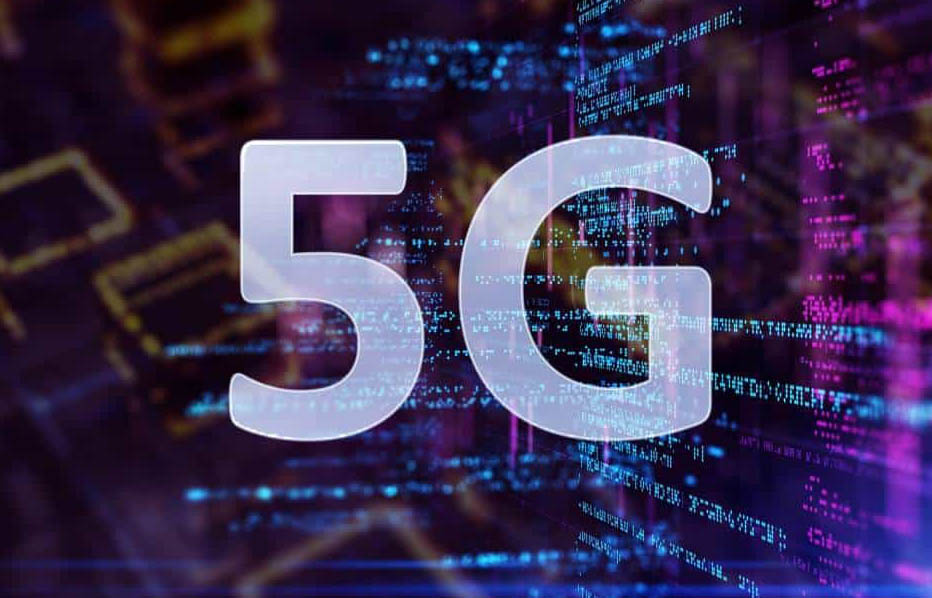
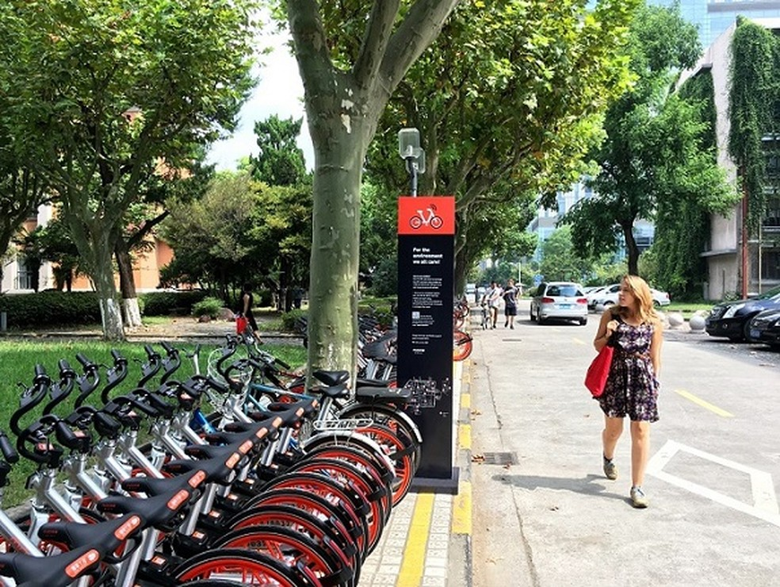
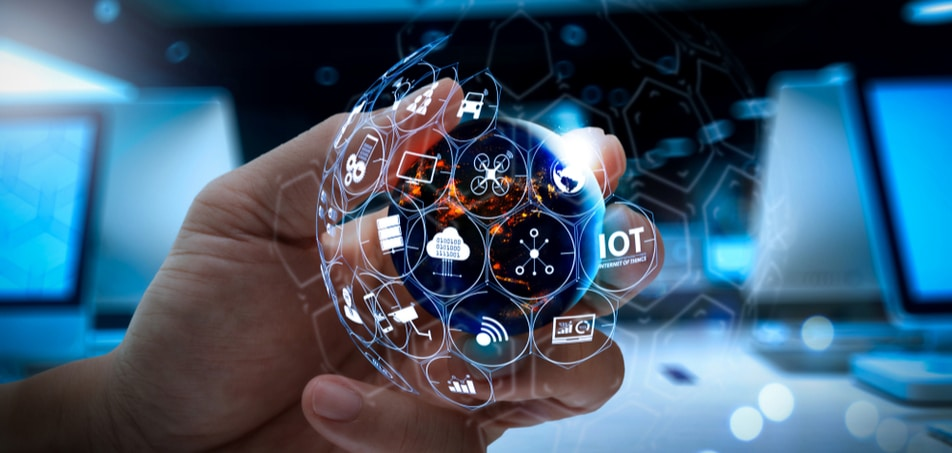
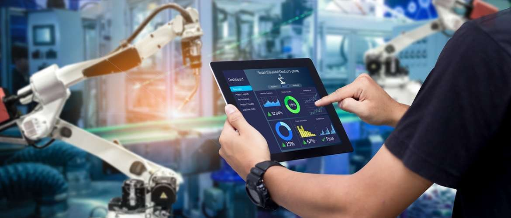

Notícias atuais
Tecnologia 5G vai exigir avançados recursos de segurança para IoT

Há mais máquinas online que celulares e elas têm até rede própria

Podcasts como ferramenta no ensino de Matemática - Prof Adriana
O que é internet das coisas (IoT) ?
Em 1950, o cientista e matemático Alan Turing defendeu a possibilidade da existência de uma inteligência artificial. Para Turing (1950), as máquinas poderiam competir com os seres humanos em todos os campos puramente intelectuais, e, para tanto, o melhor seria “[...] fornecer à máquina os melhores órgãos sensoriais que o dinheiro pode comprar e depois ensiná-la a entender e a falar em inglês. Esse processo poderia seguir o ensino normal de uma criança”. A previsão de Turing converge com a ideia de uma realidade em que coisas seriam capacitadas com identidades e “personalidades virtuais”. Para Bassi e Horn (2008) tais coisas são as que operam em espaços inteligentes, e usam interfaces inteligentes, para se conectarem e se comunicarem dentro de contextos sociais, ambientais e de usuários.
De acordo com os autores, as coisas seriam objetos interconectados, com papel ativo no que pode ser chamado de internet futura. Em termos concretos, a origem semântica da expressão Internet das Coisas é composta por duas palavras e conceitos: em “Internet”, tem-se o protocolo de comunicação, e em “Coisas”, objetos não identificáveis com precisão. À vista disso, semanticamente, “Internet das Coisas” significa uma rede mundial de objetos interligados, com base em protocolos de comunicação (BASSI e HORN, 2008). Em definição mais abstrata, Easterling (2012, tradução nossa), vislumbra que a IoT descreve “um mundo embutido com tantos dispositivos digitais que o espaço entre eles não consiste em circuitos obscuros, mas sim no espaço da Internet da Coisas (IoT): Definições e aplicabilidade aos usuários finais HFD, v.8, n.15, p. 49-66, mar 2019 53 Patrícia Carrion, Manuela Quaresma própria cidade”. Para o autor, o computador extrapolou os limites físicos de sua estrutura, fazendo com que os objetos comuns do cotidiano assumissem sinais digitais.
Em suma, a Internet das Coisas trata-se de um ecossistema que conecta objetos físicos, através de um endereço de IP3 ou outra rede, para trocar, armazenar e coletar dados para consumidores e empresas através de uma aplicação de software. .

Fonte: Internet da Coisas (IoT): Definições e aplicabilidade aos usuários finais
A importância da Internet das Coisas
Definir exatamente o termo Internet das Coisas (IoT – do inglês “Internet of Things”) é um tanto quanto pretensioso, devido a diversidade de cenários que possibilitam o uso dessa tecnologia. No entanto, podemos aqui resumir que IoT é a arte que protagoniza a iteração entre o mundo físico e digital, na qual devices e objetos, com capacidade de interceptar, analisar e processar dados que estão conectados de alguma forma à internet, podem se comunicar em tempo real e reagir de forma autônoma de acordo com a resposta mais apropriada.
Enviar um comando via smartphone (conectado à internet) para ligar a cafeteira ainda a caminho da sua residência é algo absolutamente possível e comum nos dias atuais, e se me permitem aqui um comentário empolgado – “Isto é incrivelmente fantástico!”. Imagine que o seu veículo identificou um problema nos freios e o sistema, ao perceber este comportamento, notifica a autorizada e esta, por sua vez, entra em contato para avisar sobre o diagnóstico e sugere uma visita para executar um escaneamento a fim de confirmar o problema?
Por exemplo, atualmente existem cidades que fornecem parquímetros inteligentes que operam através de Wi-Fi, proporcionando aos moradores e visitantes atualizações em tempo real sobre vagas disponíveis e permitindo que paguem com seu smartphone pelo uso da vaga. Existem também, em algumas cidades, os pontos de ônibus inteligentes, os quais mantém o usuário informado sobre as rotas, tempo e previsão de chegada, tanto através de aplicativos quanto painéis digitais instalados nos próprios pontos. Sensores podem atuar no monitoramento da temperatura do ar, temperatura do solo, velocidade do vento, umidade, radiação solar, probabilidade de chuva, etc. – Na Saúde Aplicando Internet das Coisas, médicos podem receber notificações da coleta e a organização de dados oriundos de dispositivos médicos conectados, incluindo wearables (dispositivos vestíveis) e monitores de saúde instalados nas casas e/ou ambulatórios.
Já pensou que com o uso da IoT seria possível que, enquanto se desloca para o pronto socorro da sua cidade, dados como temperatura e batimentos cardíacos já poderiam ser transmitidos antes mesmo de dar entrada na triagem? Um estudo técnico foi solicitado para embasar propostas de políticas públicas para a IoT no Brasil e, após a entrega do relatório, o BNDES será responsável por propor linhas de financiamento e modelos de fomento para o setor. Existe um grande desafio ainda para o Brasil, principalmente para quesitos como comercialização dos produtos, segurança, privacidade e infraestrutura, mas tudo indica que estamos caminhando para esta realidade, e muito em breve nosso país poderá desfrutar dos ganhos que essa tecnologia irá proporcionar, seja por impulsionar a economia, gerando novos negócios e oportunidades, quanto influenciando diretamente nos benefícios ligados à qualidade de vida das pessoas.
Fonte: Pixeon
Voltar